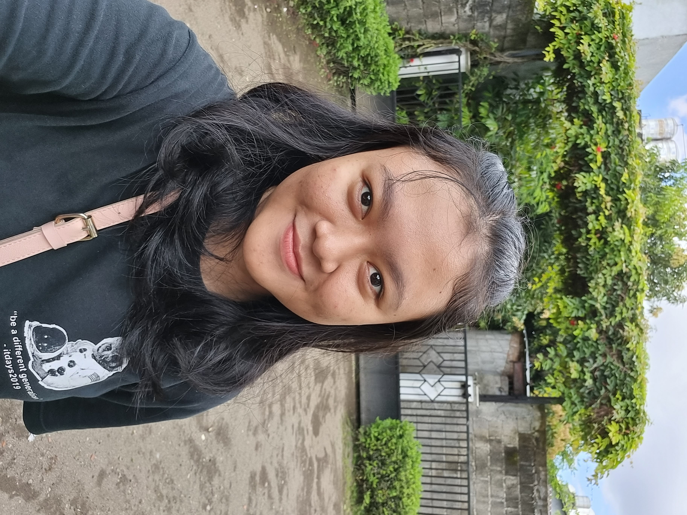

Hi! ✋
Kenalin, namaku Grace. Lengkapnya Grace Chintya Kristie Puspita. Umurku 20 tahun. Aku adalah seorang mahasiswi Universitas Sanata Dharma jurusan Informatika. Aku adalah angkatan 21. So, sekarang aku sedang menjalani semester 4. And this is the picture of me.

Sekarang kesibukanku cuma kuliah tapi kadang-kadang aku latihan dance juga sama temen-temen kampus. Kalian pasti sudah bisa menebak kalo aku ini seorang mahasiswa 'kupu-kupu'. Yes, maahasiswa yang kerjaannya kuliah-pulang-kuliah-pulang. Untuk aku yang seorang introvert ini, pulang kuliah sore aja udah bikin capek banget. Apalagi kalo kuliah dari jam 7 sampai jam 5 sore. Sampe kost pasti udah tepar dan langsung tidur karna secapek itu. Energinya sudah habis dan harus di-recharge.
Ngomong-ngomong tentang kuliah, aku mau share deh jadwal kuliahku semester ini.
| Hari/Jam | 07-08 | 08-09 | 09-10 | 10-11 | 11-12 | 12-13 | 13-14 | 14-15 | 15-16 | 16-17 | 17-18 |
|---|---|---|---|---|---|---|---|---|---|---|---|
| Senin | Analisis dan Strategi Algoritma | Analisis dan Strategi Algoritma | Analisis dan Strategi Algoritma | ||||||||
| Selasa | Pemrograman Platform | Pemrograman Platform | Pemrograman Analisis Data | Pemrograman Analisis Data | Rekayasa Perangkat Lunak | Rekayasa Perangkat Lunak | Struktur Data Non Linear | Struktur Data Non Linear | |||
| Rabu | Rekayasa Perangkat Lunak | Rekayasa Perangkat Lunak | Rekayasa Perangkat Lunak | Komputasi Paralel dan Terdistribusi | Komputasi Paralel dan Terdistribusi | Kamis | Pemrograman Analisis Data | Pemrograman Analisis Data | Pemrograman Platform | Pemrograman Platform | Pemrograman Platform | Struktur Data Non Linear | Struktur Data Non Linear | Struktur Data Non Linear |
| Jumat | Interaksi Manusia dan Komputer | Interaksi Manusia dan Komputer | Interaksi Manusia dan Komputer |
Bagaimana? It's so fun right.... Semoga, aku bisa menjalani semester 4 ini dengan lancar. Wish me luck 😀
Oke.. oke. Selesai ngomongin tentang perkuliahan. Tadi aku sempet mention kalo kegiatanku ngga hanya kuliah tapi juga latihan dance sama temen-temen.
Yup, bener banget. Aku sangat amat tertarik sama dunia dance! Aku sudah menari dari TK. Dulu, aku hanya menekuni tarian tradisional.
Namun sekarang aku mengeksplor ke jenis tarian lain seperti modern dance dan cover dance. Menurutku sebuah challenge saat kita berani
untuk mencoba sesuatu yang baru di luar zona nyaman kita. Aku pun juga merasa kesulitan saat mencobanya. Namun, semakin dinikmati, semakin aku merasa bahwa belajar hal
yang baru adalah hal yang menyenangkan!
Sebelum lanjut, coba deh klik disini!
Jadiii.. link di atas adalah link channel Youtube tim dance ku. Ya walau ngga bagus-bagus banget ya, tapi tujuan kami adalah menuangkan bakat yang kami punya. So singkat cerita muncullah channel Youtube di atas walau sudah tidak aktif lagi, hehe. Jangan lupa likenya ya!!!!
Selain ngedance, aku juga punya beberapa kegemaran, yang diantaranya :
And, that's all. Thank your for visit my website and see you in the next assignment! 💜